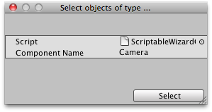

ScriptableWizard.OnWizardCreate()
Description 描述
This is called when the user clicks on the Create button.
Here you perform any final creation/modification actions. After OnCreateWizard is called, the wizard is automatically closed.
See Also: ScriptableWizard.DisplayWizard

ScriptableWizard window for selecting GameObjects of a certain "type".
// Editor Script that lets you "Select" all the GameObjects that have a certain Component.
using UnityEngine; using UnityEditor; using System.Collections;
public class ScriptableWizardOnWizardCreate : ScriptableWizard { [MenuItem("Example/OnWizardCreate example")] public static void SelectAllOfTypeMenuIem() { ScriptableWizard.DisplayWizard( "Select objects of type ...", typeof(ScriptableWizardOnWizardCreate), "Select"); }
void OnWizardCreate() { Object[] objs = FindObjectsOfType(typeof(GameObject)); ArrayList selectionBuilder = new ArrayList(); foreach (GameObject go in objs) { if (go.GetComponent<Camera>()) selectionBuilder.Add(go); } Selection.objects = selectionBuilder.ToArray(typeof(GameObject)) as GameObject[]; } }